Full name NASIR UL ISLAM and born in 1999 ,plays as CDM(Centre Defensive Mid) in the current team. He has an excellent first touch and passing ability besides being engine in the mid field.Currently he is serving as a captain in our team.
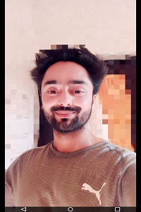
Full name MIR IMTIYAZ(IMMI SIR), plays at CB(Centre Back) position.This man needs no introduction, He is one of the most senior players of our district and has represented our district many times. He has an excellent defending and passing skills.
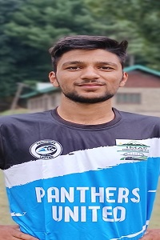
Full name AQIB HASSAN MALLA nick name Van Dijk, born in 2004 and plays at RB(Right Back) or RCB(Right Centre Back). He is cool and calm on the ball and has a good control over the ball.
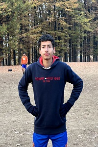
Full name Muhammad ATIF SOFI, born in 2006 and plays at LB(Left Back) position. He is one of our academy graduates who was promoted to first team in october 2022. He has excellent defensive and passing skills with quick reactions.
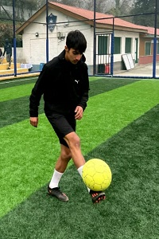
Full name Hanan Khalid Bhat, born in 2006 and plays as AM(Attacking Mid).He has represented district at junior level many times besides that he has also served for Minerva Academy. He is more of a complete and dedicated player and tries to strengthen every corner of the game day by day.
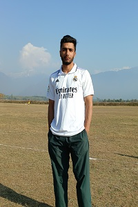
Full name BILAL AHMAD SOFI, born in 1997 and plays at RB(Right Back) position. He has the best physical strength in our club and his never give up attitude makes him one of the best defenders of our club.
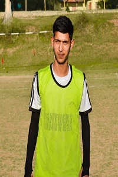
Full name FAIZAN RASHEED, born in 2005 and plays at RWF(Right Wing Forward)position. He has started his journey of football recently but with his fast learning ability, discipline and hardwork he has achieved position in first team. Besides these qualities he has a strong shoot power and good finishing touch.
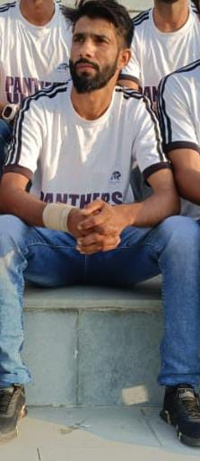
Full name Meer Gulzaar, born in 1995 and plays at CM(Centre Mid) position.Being one of the senior players in the squad he has unlimited stamina besides dribbling and speed.
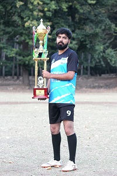
Full name FAIZAN NAZIR, born in 1999 and plays as a midfielder. This name needs no introduction he is one of the senior most players in the team and has excellent long passing and shooting abilities.
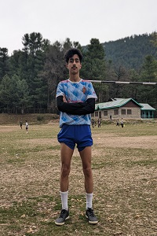
Full name FARHAN NAZIR, born in 2006 and plays at RWF(Right Wing Forward) position.With his fast speed and dribbling he can beat any player with ease.Besides that he has excellent finishing touch.
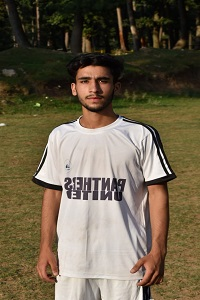
Full name FURQAAN HAMEED MALLA, born in 2005 and plays at LWF(Left Winger Forward) position. With his electric footwork,speed and dribbling he can make any defender look like a fool.His shoot power, crossing ability and finishing touch makes him more of a complete player.
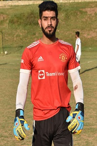
Full name MUDASIR RESHI, born in 1996 and plays as GK(Goal Keeper). His diving ability and flexibilty makes him one of the best in the business.
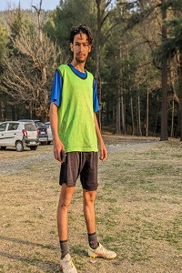
Full name MUSTAFA AHMED MALLA, born in 2002 and plays at CB(Centre Back) position. He is a robust defender with sharp defending skills and wall in our backline besides being disciplined and hard working in the training sessions.
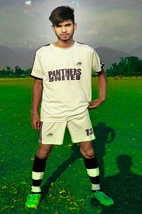
Full name OWAIS IRSHAD WANI, born in 2006 and plays as a CF(Centre Forward). He is a natural talent with sharp dribbling and finishing skills.
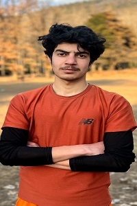
Full name SAHIL MUNEER, born in 2006 and plays at LB(left back) position. He is gifted with left foot and his defending and passing skill makes him the best at his position.
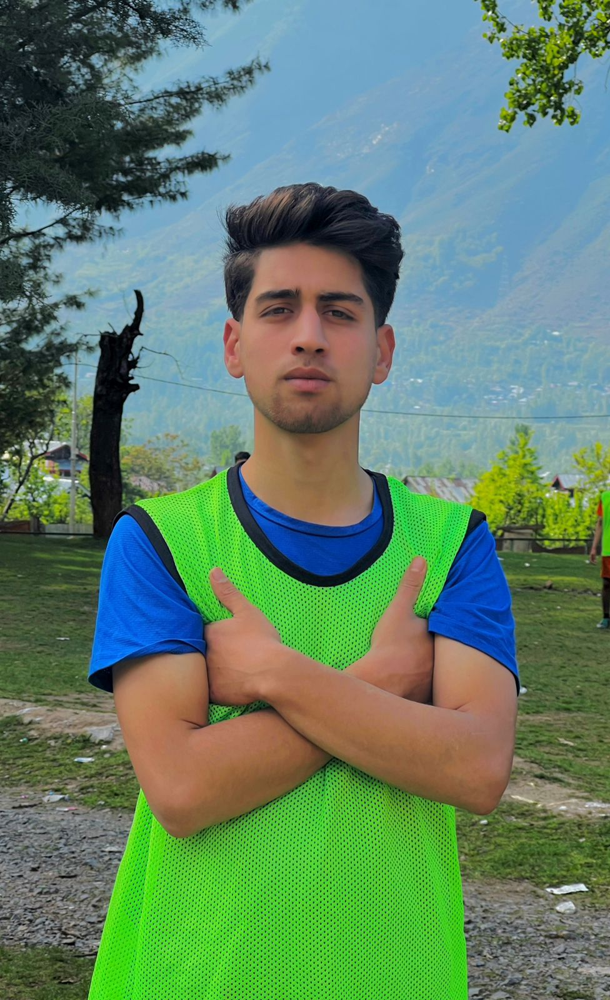
Full name SAQIB SHABIR, born in 2003 and plays at CB(Centre Back) position. His electric reactions ,defending skill and speed can trouble any player. He is one of the quick learners of the game.
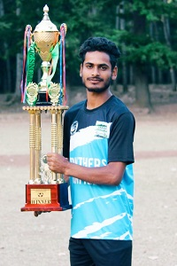
Full name YAWAR AHMAD, born in 2002 and plays at LB(Left Back) position. His competitive mind and speed is something difficult to achieve.
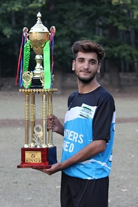
Full name SAJID HUSSAIN BHAT, born in 2001 and plays at CF(Centre Forward) position. His main skill is fast footwork.